1はじめに：私たちの仕事
ポスティングは、お店のチラシを「そのお店に来てほしい人」の家に届ける仕事です。
私たちがいちばん大切にしているのは「反響率」です。
反響率＝チラシを見てお店に来てくれた人の割合（来店数 ÷ 配った部数）。
決められたエリアに、一枚一枚ていねいに届けることで、お店に人が来て、次のお仕事につながります。
- どの町に何部配ったか → 反響率を正しく出すため
- 次にどこに配るかを決める材料
- きちんと配ったことの証明（GPS）
アプリの画面
右上の丸いアイコン → ログイン情報・ログアウト・このマニュアル
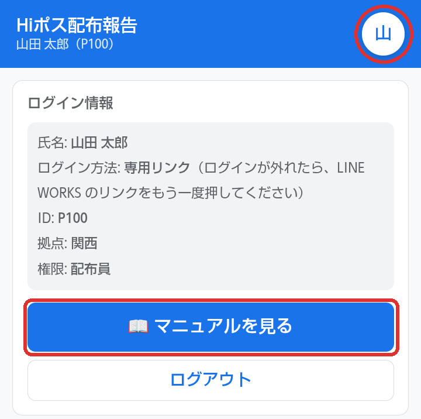
2アプリの入り方
- 管理者から LINE WORKS で届く「あなた専用のリンク」を押します。
- そのままアプリが開きます。Googleアカウントやパスワードはいりません。
- ログインが外れたときは、同じリンクをもう一度押せば入れます。
※ Googleアカウントのメールアドレスを管理者に登録してもらっている人は、ログイン画面の［Googleでログイン］からも入れます。
- リンクはあなた専用の鍵です。ほかの人に送らないでください（その人があなたとして報告できてしまいます）。
- スマホをなくした・リンクを人に送ってしまったときは、すぐ管理者に連絡してください（新しいリンクに取り替えます）。
- iPhone は、ホーム画面のアイコンではなく LINE WORKS のリンクから開いてください。
3アプリを使う場面
アプリを開くのは、次の場面です。
- 📍 配布禁止 で、今日のエリアの配ってはいけない家を確認
- 配布禁止の家を避けたら ☐ 回避したらタップ
- 📝 報告 から配布報告（部数・ランキーパーの時間・GPSの写真）
- 📋 履歴 から直す
- 📅 シフト から出勤できる日を出す
4配布報告のやり方
📝 報告 を開くと、今日の担当の案件が出ます。上から順に入れていきます。
- ① 本日の案件 お店の名前と配るエリアを確かめます。
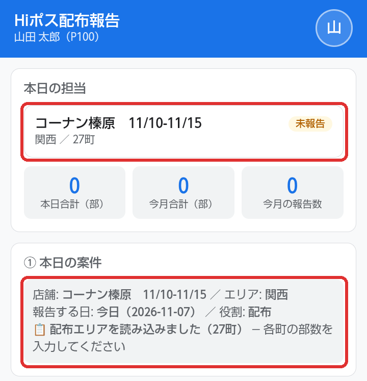
赤枠：今日のお店・エリア・報告する日を確かめます - ② 町×部数 町ごとに配った部数を入れます。配らなかった町は空欄のままでOK。合計は自動で出ます。
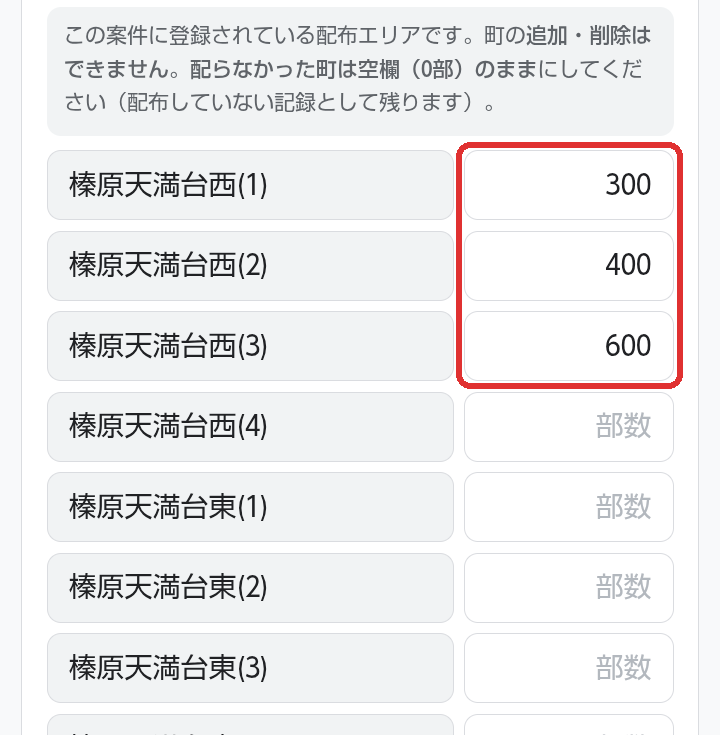
赤枠：配った町の右に部数を入れます（配らなかった町は空欄のまま） - ③ 勤務実績 配布時間に、ランキーパーに出た時間をそのまま（時間と分）入れます。勤務時間は、いつもと違う日だけ直します。
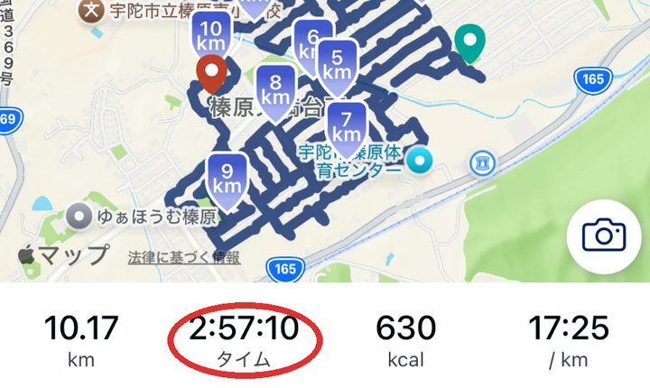
ランキーパーの結果画面の「タイム」を見ます（この例は 2:57:10） 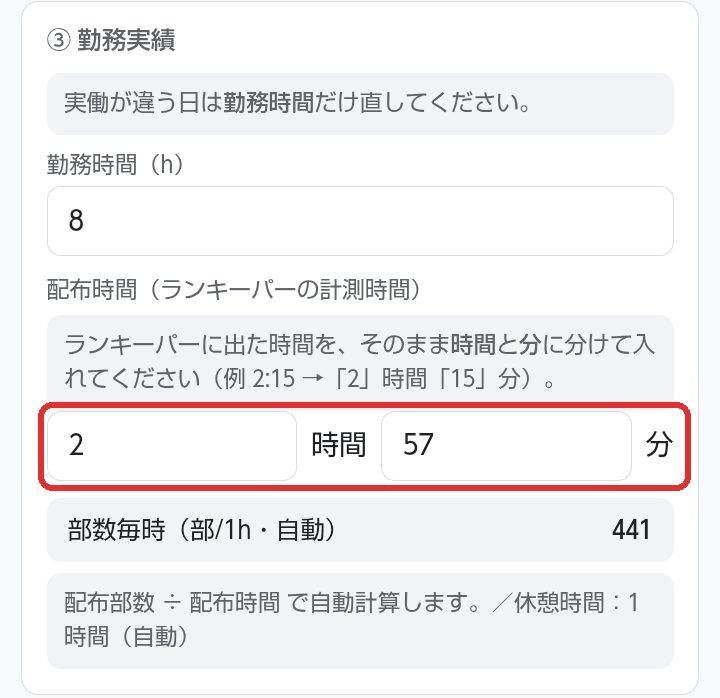
赤枠：時間と分に分けて入れます（2:57:10 → 「2」時間「57」分。秒は入れません） - ④ GPS軌跡画像 GPSアプリの軌跡のスクリーンショットを4枚以上つけます（足りないと送れません）。
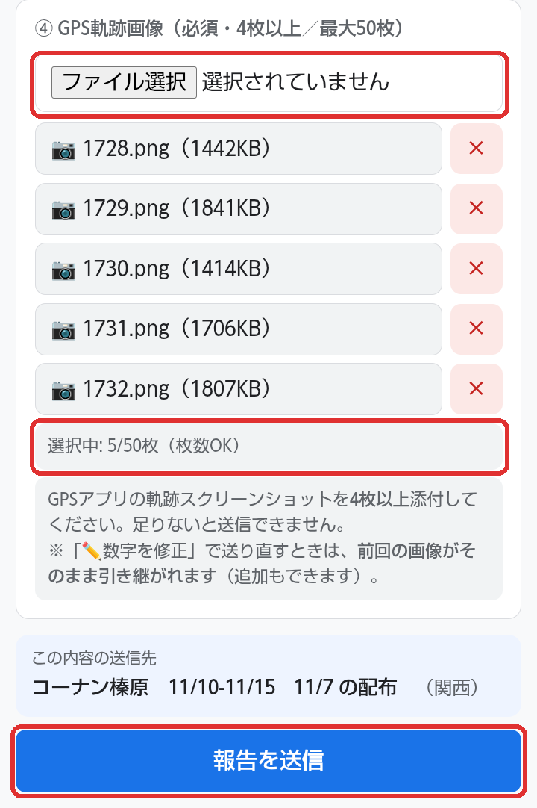
赤枠：［ファイル選択］で写真を選ぶ →「枚数OK」になったら［報告を送信］ - 報告を送信 を押します。「これで報告は完了です」と出るまで、画面を閉じないでください（写真を1枚ずつ保存しています）。
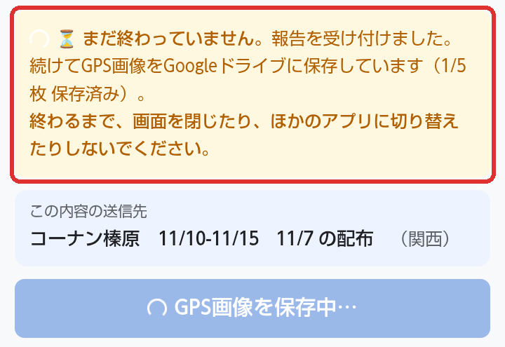
この黄色の表示が出ている間はまだ途中です。画面を閉じたり、ほかのアプリに切り替えたりしないでください 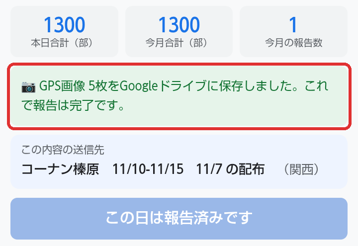
緑の「これで報告は完了です」が出たら完了です
こんなときは
- 送迎・現場指導だけの日：町と写真の欄は出ません。勤務時間だけ確かめて送信します。
- 報告を忘れた日がある：黄色の ⚠ 報告忘れ のカードを押すと、その日の報告ができます。
- 写真の保存が途中で止まった：電波のよい所で 保存できなかった画像をもう一度送る を押します。
- 部数がずれると反響率がずれます。「この町は反響がよい／悪い」の判断を間違え、次のエリア選びに響きます。
- GPSは、きちんと配った証明です。「チラシが入っていない」と言われたときに、あなたとお店を守ります。
- その日のうちに報告すれば、記憶が新しいので正確です。
5配布禁止エリア
「チラシお断り」などで、配ってはいけない家があります。📍 配布禁止 に、今日の案件のぶんが出ます。
- 配布エリアに着いたら、リストの住所を確認します。🗾 〇〇 の配布禁止マップを開く で、地図でも場所が見られます。
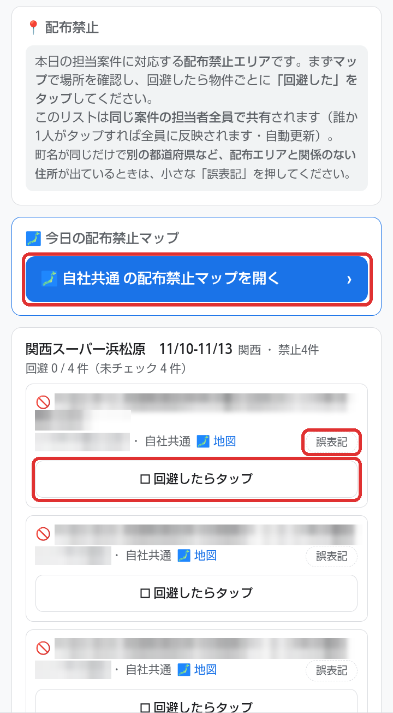
赤枠：マップで場所を確認 → 避けたら［☐ 回避したらタップ］（右の小さい［誤表記］は手順3）。
※この写真の住所はぼかしています - その家を避けたら ☐ 回避したらタップ を押します。
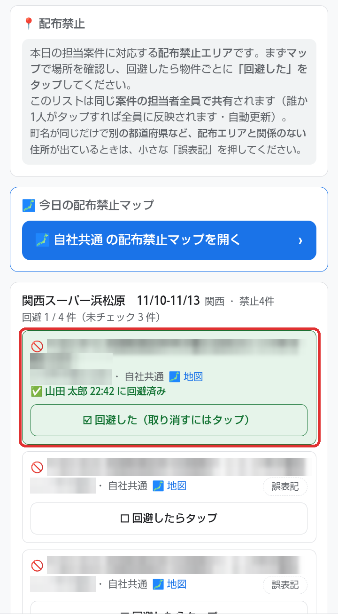
赤枠：緑色になり「〇〇 〇時〇分 に回避済み」と出ます。間違えて押したときは、もう一度押すと取り消せます - 町名が同じだけで、別の都道府県など、配布エリアと関係のない住所が出ているときは、小さな 誤表記 を押し、確認が出たら［OK］を押します。
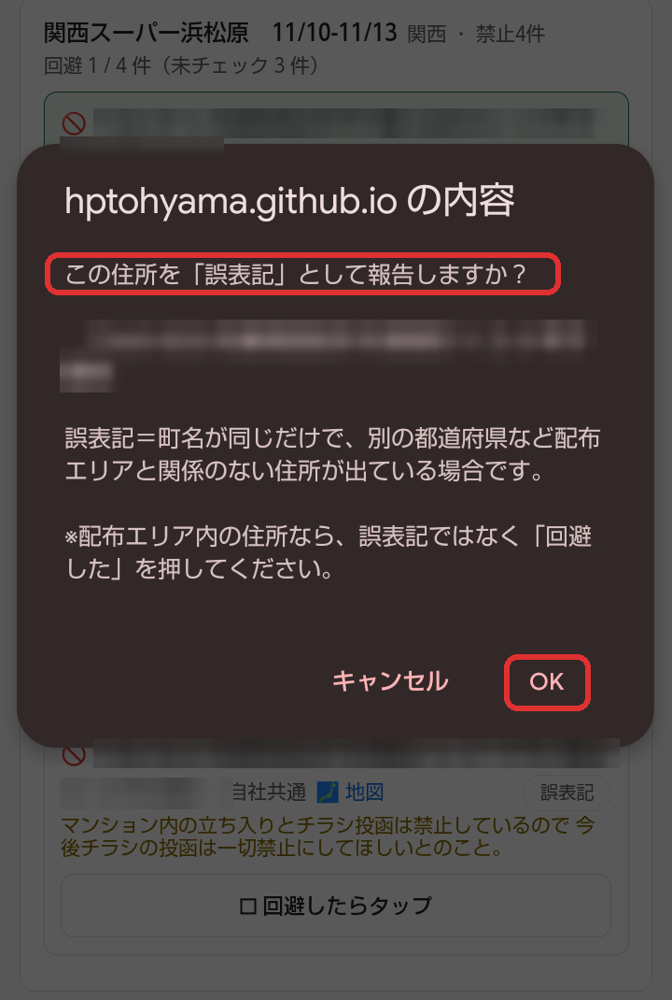
赤枠：「誤表記として報告しますか？」→［OK］。配布エリアの中の住所なら、誤表記ではなく「回避した」を押してください - 全部チェックすると「すべて回避済み」になります。
同じ案件のメンバーでリストは共有です。誰かがチェックすると、ほかの人の画面にも「回避済み」と出ます。
6報告を直したいとき
📋 履歴 に、これまで送った報告が並んでいます（直近60日）。
数字を間違えたとき
- 📋 履歴 で、直したい報告を押します。
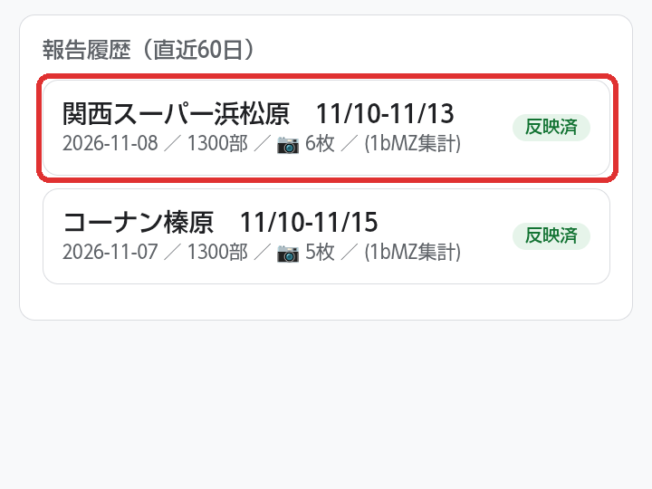
赤枠：直したい報告を押す - ✏️ 数字を修正 を押します。
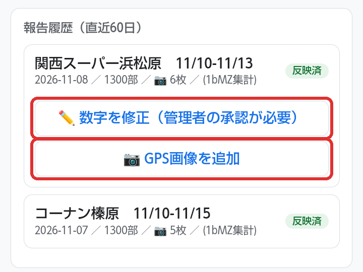
赤枠：上が［✏️ 数字を修正］、下が［📷 GPS画像を追加］ - 報告の画面に前の数字が入った状態で開きます。違うところだけ直して、いちばん下の［修正内容を申請する］を押します。
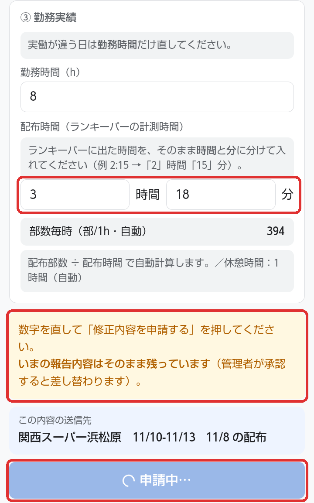
赤枠：直したところ（この例は配布時間）→ 黄色の案内 →［修正内容を申請する］（押すと「申請中…」になります） - 緑の「修正内容を申請しました」が出たら申請完了です。管理者が承認すると反映されます（承認までは前の数字のまま）。
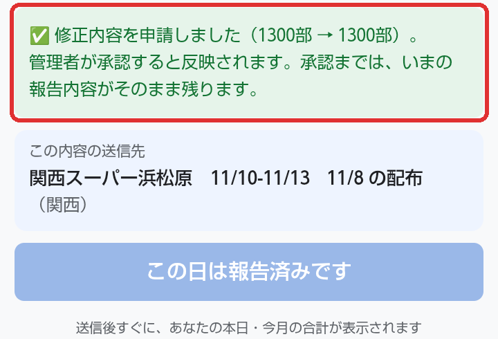
赤枠：申請できた表示。反映は管理者の承認のあとです
送った日から7日以内なら直せます。
GPSの写真が足りないとき（⚠）
手順2の画面で 📷 GPS画像を追加 を押すと、写真を足せます。
7シフトの出し方
- 📅 シフト を開くと、出す期間が並んでいます（関西は ①前半・②後半 など）。提出期日と勤務期間を確かめて この期間を提出する を押します。
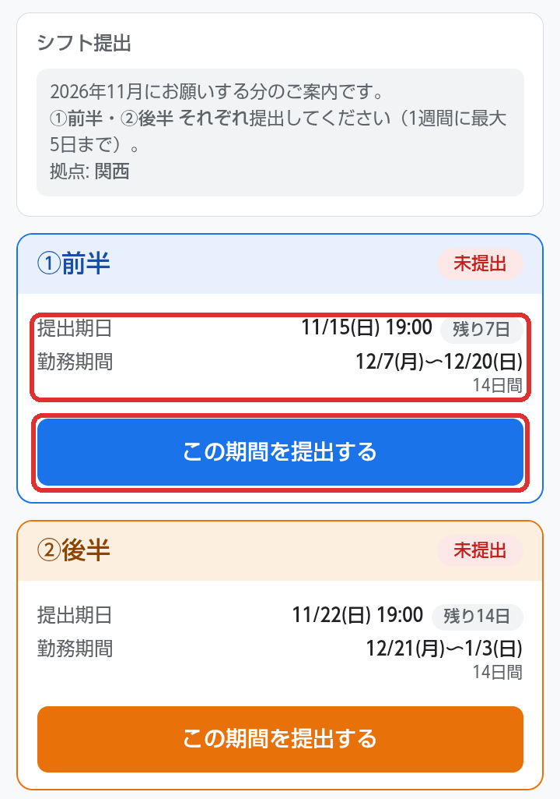
赤枠：提出期日・勤務期間を確かめて［この期間を提出する］ - 出勤できる日をタップして選びます（青くなります。もう一度タップで取り消し）。選ばなかった日は「出られない日」になります。勤務時間は 10:00〜19:00 です。
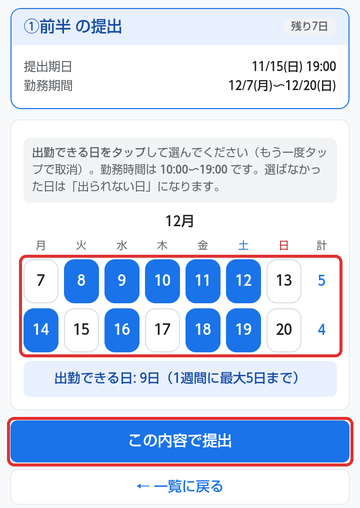
赤枠：出られる日をタップ（青＝出勤）→［この内容で提出］ 1週間（月〜日）に出勤できるのは5日までです。6日以上選ぶと赤く出て、提出できません。
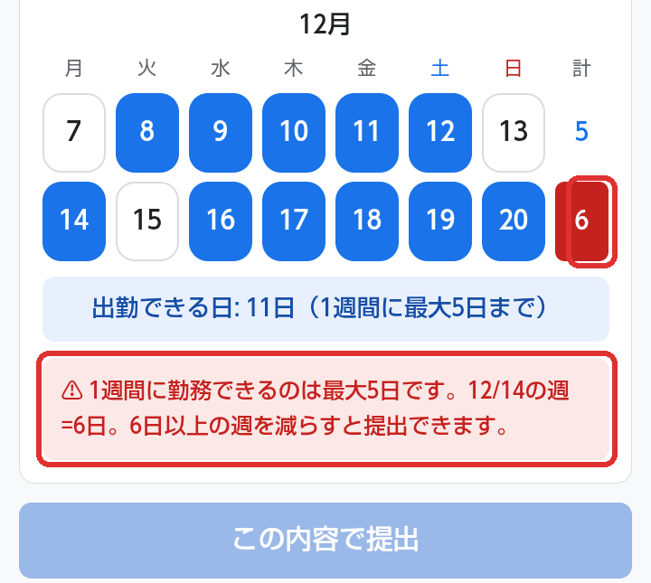
赤枠：右の「計」が6になった週は、どこか1日を外してください - この内容で提出 を押します。「シフトを提出しました」と出て、「提出済み ✓」になったら完了です。期日までは 修正する（締切まで可） で直せます。
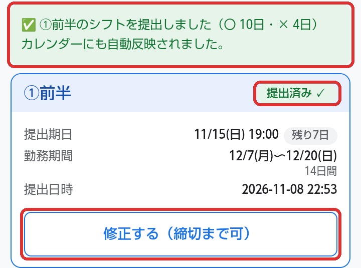
赤枠：提出できた表示・「提出済み ✓」・期日までは［修正する］で直せます
- 締切のあとで変えたいとき：シフト画面の下の 🔄 シフト変更の申請 で、日にち・出勤か欠勤か・理由を入れて この内容で申請する を押します（前日まで）。管理者が承認すると変わります。当日の変更はアプリではできないので、担当者に連絡してください。
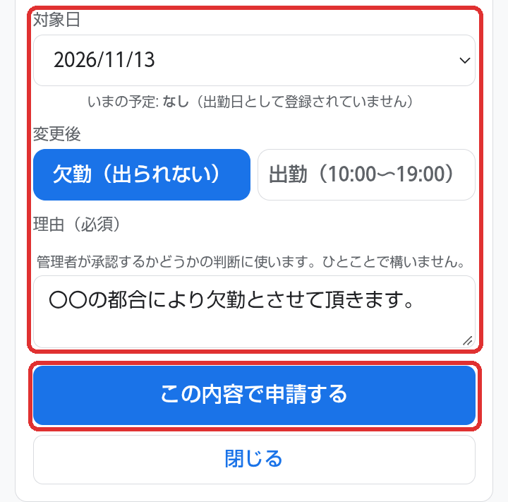
赤枠：対象日 → 欠勤か出勤か → 理由（ひとことでOK）→［この内容で申請する］ - 提出が間に合わないとき・期日を過ぎてから変えたいときは、必ず北山さんまたは遠山まで連絡してください。
8困ったとき
- アプリに入れない／「このログイン用リンクは使えません」と出る
- リンクが新しくなった可能性があります。管理者に新しいリンクをもらってください。
- 写真の保存が終わらない
- 電波のよい所で 保存できなかった画像をもう一度送る を押してください。「これで報告は完了です」と出たら完了です。
- 今日の案件が出てこない・送信できない
- 予定がまだ登録されていないかもしれません。管理者に連絡してください。
- 報告の数字を間違えた
- 「報告を直したいとき」を見てください。
- シフトを出し忘れた・期日に間に合わない
- 北山さんまたは遠山まで連絡してください。
分からないことは、遠慮なく北山さん・遠山に聞いてください。